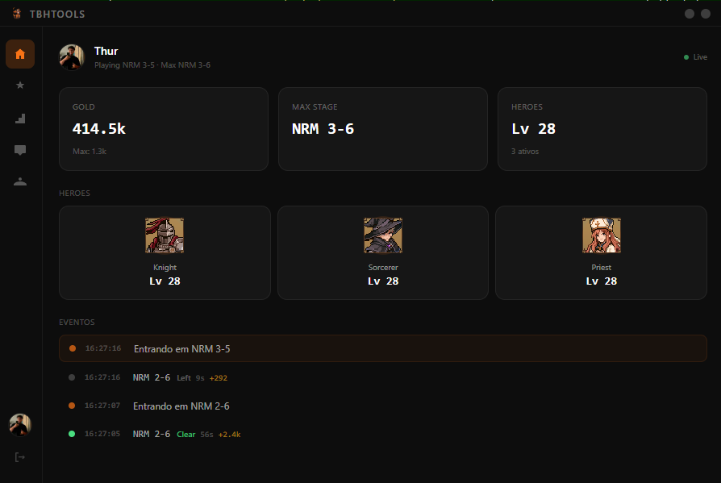

Auto-craft de itens — inventário nunca enche
O recurso que muda o jogo: o TBH Tools crafta seus itens automaticamente enquanto você farma — ou enquanto dorme. Esqueça aquele inventário lotado travando o progresso. Liga e esquece.
O TBH Tools automatiza o craft de itens, farma stages em ciclo e otimiza Gold ou EXP sozinho. Você nunca mais volta pra um inventário cheio.

Configure uma vez. O TBH Tools cuida do resto enquanto você vive a vida.
O recurso que muda o jogo: o TBH Tools crafta seus itens automaticamente enquanto você farma — ou enquanto dorme. Esqueça aquele inventário lotado travando o progresso. Liga e esquece.
Cicla entre stages sozinho, sem babá. Configure a rota e deixe rodar 24 horas por dia.
Testa o que sua build atual aguenta e ajusta o farm pra maximizar Gold ou EXP — você escolhe o objetivo.
Importa automaticamente a build dos seus heróis. Zero configuração manual pra começar.
Exporte, importe e compartilhe builds com a comunidade num clique. Aprenda com os melhores.
Enquanto roda, o TBH Tools recalcula e melhora a rota de farm. Sempre no rendimento máximo.
Importação e compartilhamento de builds dos heróis, rodando em tempo real.
Todos os planos liberam o TBH Tools completo. A diferença é só a duração.
Pra testar e sentir o poder da automação.
O equilíbrio ideal pra quem joga todo dia.
Melhor custo-benefício. Farme a temporada inteira.
Baixe pelo Discord e assine direto dentro do app · Cancele quando quiser
Não achou o que procurava? Chama a gente no Discord.
Entre na comunidade, baixe o TBH Tools e deixe seu herói farmando enquanto você vive a vida.